CODING AGENTS AS PIXEL WORLD MODELS
traex/GPT-6.1-Sol · 0080
点击播放 · 原生 RGB 像素
逐轮保存的候选
回放视频、检查图与代码变化。
每份候选均可单独播放。实际图片检查记录在下方工具轨迹中。
候选 01播放与检查图
点击播放 · 原生 RGB 像素
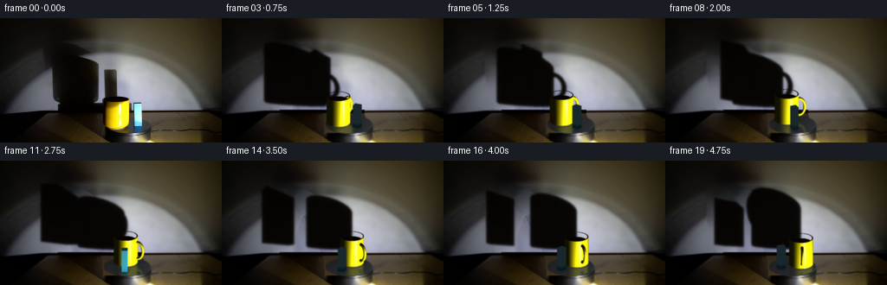
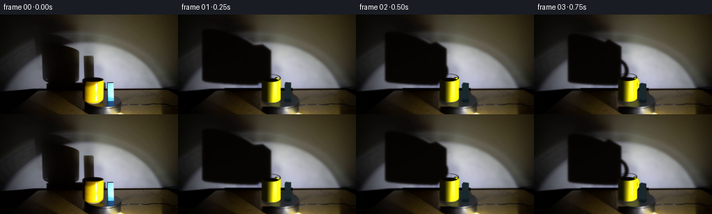
展开代码变化
--- 上一保存版本
+++ 本次保存版本
@@ -0,0 +1,267 @@
+from pathlib import Path
+import numpy as np
+from PIL import Image, ImageDraw, ImageFilter
+from scipy.interpolate import RBFInterpolator
+from scipy.ndimage import gaussian_filter
+from artifact_io import save
+
+ROOT=Path(__file__).resolve().parent
+W,H=256,144
+S=3
+SW,SH=W*S,H*S
+ORIG=np.array(Image.open(ROOT/'first_frame.png').convert('RGB'))
+K=.405
+V=np.sqrt(1-K*K)
+CX,CY=146.2,122.5
+LIGHT=np.array([49.,-52.,-7.])
+WALL=44.
+
+def mask_poly(points,size=(W,H)):
+ im=Image.new('L',size);ImageDraw.Draw(im).polygon(points,fill=255)
+ return np.asarray(im,dtype=float)/255
+
+def make_background():
+ yy,xx=np.mgrid[:H,:W]
+ wall_mask=mask_poly([(47,25),(80,26),(100,35),(116,47),(118,91),(118,57),(135,56),(138,91),(149,91),(153,106),(60,106),(58,99),(52,91),(48,61)])
+ # Recover the illuminated wall with smooth classical interpolation from the photograph.
+ shadow_exclude=gaussian_filter(wall_mask,2)>.005
+ object_exclude=mask_poly([(116,89),(150,88),(153,96),(164,95),(165,130),(119,133)])>.1
+ valid=(yy<105)&(~shadow_exclude)&(~object_exclude)
+ sample=valid & (xx%3==0)&(yy%3==0)
+ pts=np.stack([xx[sample]/100,yy[sample]/100],axis=1)
+ rbf=RBFInterpolator(pts,ORIG[sample].astype(float),kernel='thin_plate_spline',smoothing=.015,neighbors=130)
+ fill=rbf(np.stack([xx.flatten()/100,yy.flatten()/100],axis=1)).reshape(H,W,3)
+ # Mask encompasses the mug's original shadow, block shadow and their penumbrae.
+ m=gaussian_filter(wall_mask,1.2)
+ m=np.clip(m*1.45,0,1)*(yy<106)
+ bg=ORIG*(1-m[...,None])+np.clip(fill,0,255)*m[...,None]
+ # Remove foreground objects; the rotating platter is kept fixed in the shot.
+ obj=object_exclude.astype(float)
+ wall_obj=obj*(yy<106)
+ bg=bg*(1-wall_obj[...,None])+np.clip(fill,0,255)*wall_obj[...,None]
+ # Platter face and the thin visible table area originally occluded by the objects.
+ table=np.zeros_like(bg)
+ table[:,:,0]=48 + .8*(yy-108)+.05*(xx-120)
+ table[:,:,1]=39 + .6*(yy-108)+.04*(xx-120)
+ table[:,:,2]=25 + .3*(yy-108)+.02*(xx-120)
+ erase=obj*(yy>=110)
+ bg=bg*(1-erase[...,None])+table*erase[...,None]
+ # Black trim across the bottom of the wall.
+ for y in range(106,110):
+ a=object_exclude[y].astype(float)
+ color=np.array([15,12,10]) if y==106 else np.array([5,3,2])
+ bg[y]=bg[y]*(1-a[:,None])+color*a[:,None]
+ ell=((xx-CX)/28.4)**2+((yy-CY)/11.3)**2
+ inside=ell<1
+ edge=np.clip((1-ell)*6,0,1)
+ disc=np.stack([39+5*(xx-CX)/28+3*(yy-CY)/11,
+ 40+6*(xx-CX)/28+4*(yy-CY)/11,
+ 43+7*(xx-CX)/28+5*(yy-CY)/11],axis=2)
+ # Retain the original sidewall, seam, edge highlights, tabletop and cable.
+ bg=bg*(1-edge[...,None])+disc*edge[...,None]
+ return np.clip(bg,0,255).astype(np.uint8)
+
+BG=make_background()
+
+def project(p):
+ p=np.asarray(p)
+ return np.stack([CX+p[...,0],CY-K*p[...,1]-V*p[...,2]],axis=-1)
+
+def rotate(p,a):
+ p=np.asarray(p).copy()
+ x,y=p[...,0].copy(),p[...,1].copy()
+ p[...,0]=x*np.cos(a)+y*np.sin(a)
+ p[...,1]=-x*np.sin(a)+y*np.cos(a)
+ return p
+
+# Build small meshes, manually shaded and rasterized (no rendering engine).
+def cylinder_mesh(center,radius,zlo,zhi,mat,n=100):
+ c=np.asarray(center); t=np.linspace(0,2*np.pi,n,endpoint=False)
+ bot=np.stack([c[0]+radius*np.cos(t),c[1]+radius*np.sin(t),np.full(n,zlo)],axis=1)
+ top=bot.copy();top[:,2]=zhi
+ normals=np.stack([np.cos(t),np.sin(t),np.zeros(n)],axis=1)
+ tris=[]
+ for j in range(n):
+ k=(j+1)%n
+ tris += [(np.array([bot[j],bot[k],top[k]]),np.array([normals[j],normals[k],normals[k]]),mat),
+ (np.array([bot[j],top[k],top[j]]),np.array([normals[j],normals[k],normals[j]]),mat)]
+ return tris
+
+def disk_ring(center,rin,rout,z,mat,n=100):
+ tris=[]
+ for j in range(n):
+ t1,t2=j*2*np.pi/n,(j+1)*2*np.pi/n
+ p=np.array([[center[0]+rout*np.cos(t1),center[1]+rout*np.sin(t1),z],
+ [center[0]+rout*np.cos(t2),center[1]+rout*np.sin(t2),z],
+ [center[0]+rin*np.cos(t2),center[1]+rin*np.sin(t2),z],
+ [center[0]+rin*np.cos(t1),center[1]+rin*np.sin(t1),z]])
+ norm=np.tile([0,0,1.],(3,1))
+ tris.append((p[[0,1,2]],norm,mat));tris.append((p[[0,2,3]],norm,mat))
+ return tris
+
+CUP=np.array([-12.2,-1.])
+BLOCK=np.array([12.3,-2.3])
+
+def mesh(a):
+ tris=[]
+ tris += cylinder_mesh(CUP,13.8,.7,33.2,'yellow')
+ tris += cylinder_mesh(CUP,13.4,0,.9,'base')
+ tris += disk_ring(CUP,12.6,13.8,33.2,'rim')
+ tris += cylinder_mesh(CUP,12.6,27.5,33.15,'inside')
+ tris += disk_ring(CUP,0,12.6,27.5,'inside')
+ # Ceramic handle in a radial vertical plane, initially mostly hidden behind the cup.
+ radial=np.array([np.cos(1.22),np.sin(1.22),0])
+ tangent=np.array([-radial[1],radial[0],0])
+ c=np.r_[CUP,16.9]+radial*14.2
+ nu,nv=40,12
+ verts=np.zeros((nu,nv,3)); norms=np.zeros_like(verts)
+ for i in range(nu):
+ u=2*np.pi*i/nu
+ ctr=c+radial*(6.8*np.cos(u))+np.array([0,0,10.2*np.sin(u)])
+ out=radial*np.cos(u)+np.array([0,0,np.sin(u)])
+ for j in range(nv):
+ v=2*np.pi*j/nv
+ normal=out*np.cos(v)+tangent*np.sin(v)
+ verts[i,j]=ctr+1.7*normal;norms[i,j]=normal
+ for i in range(nu):
+ for j in range(nv):
+ ii,jj=(i+1)%nu,(j+1)%nv
+ for ids in [[(i,j),(ii,j),(ii,jj)],[(i,j),(ii,jj),(i,jj)]]:
+ tris.append((np.array([verts[q] for q in ids]),np.array([norms[q] for q in ids]),'yellow'))
+ # Tall cyan-blue rectangular block, rigidly attached to the same rotating disk.
+ x,y=BLOCK; dx,dy=4.15,3.5
+ z=27.2
+ corners=np.array([[x-dx,y-dy,0],[x+dx,y-dy,0],[x+dx,y+dy,0],[x-dx,y+dy,0],
+ [x-dx,y-dy,z],[x+dx,y-dy,z],[x+dx,y+dy,z],[x-dx,y+dy,z]])
+ faces=[([0,1,5,4],[0,-1,0]),([1,2,6,5],[1,0,0]),([2,3,7,6],[0,1,0]),([3,0,4,7],[-1,0,0]),([4,5,6,7],[0,0,1])]
+ for ids,n in faces:
+ for q in [[0,1,2],[0,2,3]]:
+ tris.append((corners[np.array(ids)[q]],np.tile(n,(3,1)),'blue'))
+ return [(rotate(p,a),rotate(n,a),m) for p,n,m in tris]
+
+
+def shade(points,norm,material):
+ if material=='inside':
+ return np.tile(np.array([5.,2.,1.]),(len(points),1))
+ l=LIGHT-points
+ l/=np.maximum(np.linalg.norm(l,axis=1,keepdims=True),1e-6)
+ norm/=np.maximum(np.linalg.norm(norm,axis=1,keepdims=True),1e-6)
+ dif=np.maximum(np.sum(norm*l,axis=1),0)
+ eye=np.array([0,-V,K])
+ half=l+eye;half/=np.linalg.norm(half,axis=1,keepdims=True)
+ spec=np.maximum(np.sum(norm*half,axis=1),0)
+ if material=='yellow':
+ power=np.clip(.065+1.68*dif**1.5,0,1.15)
+ col=np.array([252.,238.,8.])[None,:]*power[:,None]
+ col+=((spec**115)*220)[:,None]*np.array([1,1,.64])
+ col+=((spec**28)*17)[:,None]
+ col+=np.array([2,1,0])
+ elif material=='blue':
+ power=.13+1.32*dif
+ col=np.array([47.,174.,206.])[None,:]*power[:,None]
+ col+=((spec**65)*65)[:,None]
+ # Slight vertical tone shift resembles the real frosted blue plastic surface.
+ height=points[:,2]
+ col+=(np.clip((height-1)/5,0,1)*18)[:,None]*np.array([1,1,1])
+ elif material=='base':
+ col=np.array([178.,170.,134.])[None,:]*(.15+.95*dif[:,None])
+ col+=(spec**60*100)[:,None]
+ elif material=='rim':
+ col=np.array([47.,32.,3.])[None,:]*(.2+dif[:,None])
+ return np.clip(col,0,255)
+
+
+def raster(tris,reflection=False):
+ image=np.zeros((SH,SW,3),float);alpha=np.zeros((SH,SW),float)
+ zb=np.full((SH,SW),-1e8,float)
+ eye=np.array([0,-V,K])
+ for p,n,mat in tris:
+ if reflection:
+ p=p.copy();p[:,2]*=-1
+ if not reflection and np.dot(np.mean(n,axis=0),eye)<=-.1:
+ continue
+ pts=project(p)*S
+ low=np.maximum(np.floor(pts.min(axis=0)).astype(int),0)
+ high=np.minimum(np.ceil(pts.max(axis=0)).astype(int),[SW-1,SH-1])
+ if np.any(high<low):continue
+ x0,y0=low;x1,y1=high
+ yy,xx=np.mgrid[y0:y1+1,x0:x1+1];xx=xx+.5;yy=yy+.5
+ xA,yA=pts[0];xB,yB=pts[1];xC,yC=pts[2]
+ det=(yB-yC)*(xA-xC)+(xC-xB)*(yA-yC)
+ if abs(det)<1e-8:continue
+ w0=((yB-yC)*(xx-xC)+(xC-xB)*(yy-yC))/det
+ w1=((yC-yA)*(xx-xC)+(xA-xC)*(yy-yC))/det
+ w2=1-w0-w1
+ good=(w0>=-1e-6)&(w1>=-1e-6)&(w2>=-1e-6)
+ depths=p@eye
+ depth=w0*depths[0]+w1*depths[1]+w2*depths[2]
+ subz=zb[y0:y1+1,x0:x1+1]
+ good&=(depth>subz)
+ if not np.any(good):continue
+ weights=np.stack([w0[good],w1[good],w2[good]],axis=1)
+ pos=weights@p
+ nn=weights@n
+ if reflection:
+ pos[:,2]*=-1
+ colors=shade(pos,nn,mat)
+ image[y0:y1+1,x0:x1+1][good]=colors
+ alpha[y0:y1+1,x0:x1+1][good]=1
+ subz[good]=depth[good]
+ return image,alpha
+
+
+def shadows(tris):
+ wall=Image.new('L',(SW,SH)); dw=ImageDraw.Draw(wall)
+ floor=Image.new('L',(SW,SH)); df=ImageDraw.Draw(floor)
+ for p,n,m in tris:
+ # Line projection from fixed spotlight onto wall and platter/table surfaces.
+ f=(WALL-LIGHT[1])/(p[:,1]-LIGHT[1])
+ q=LIGHT[None,:]+(p-LIGHT)*f[:,None]
+ uv=project(q)*S
+ dw.polygon([tuple(v) for v in uv],fill=255)
+ # Light is lower than objects, so their dominant shadows are on the wall.
+ hard=np.asarray(wall,dtype=float)/255
+ hard[round(106*S):]=0
+ pen=gaussian_filter(hard,1.05*S)
+ soft=gaussian_filter(hard,3.0*S)
+ return np.clip(pen*.88+soft*.10,0,1)
+
+
+def render(a):
+ tris=mesh(a)
+ bg=np.array(Image.fromarray(BG).resize((SW,SH),Image.Resampling.BICUBIC),dtype=float)
+ sh=shadows(tris)
+ bg=bg*(1-sh[...,None]) + np.array([5,3,1])[None,None,:]*sh[...,None]
+ yy,xx=np.mgrid[:SH,:SW];x=xx/S;y=yy/S
+ disc=((x-CX)/28.1)**2+((y-CY)/11.1)**2<.94
+ reflection,ra=raster(tris,True)
+ ra=gaussian_filter(ra,1.3*S)*disc*.23
+ reflection=gaussian_filter(reflection,(1.3*S,1.3*S,0))
+ bg=bg*(1-ra[...,None])+reflection*ra[...,None]
+ # Soft contact shadows and highlights follow the orbit on the fixed platter.
+ for center,r in [(CUP,13),(BLOCK,4.2)]:
+ xyz=rotate(np.r_[center,0],a);u,v=project(xyz)
+ contact=np.exp(-((x-u)/(r*1.04))**2-((y-v)/2.1)**2)*.4*disc
+ bg*=1-contact[...,None]
+ obj,al=raster(tris)
+ bg=bg*(1-al[...,None])+obj*al[...,None]
+ # Camera softness: downsampling rather than crisp synthetic outlines.
+ bg=gaussian_filter(bg,(.42*S,.42*S,0))
+ return np.array(Image.fromarray(np.uint8(np.clip(bg,0,255))).resize((W,H),Image.Resampling.LANCZOS))
+
+
+def main():
+ frames=[]
+ r0=render(0)
+ Image.fromarray(BG).save(ROOT/'.tmp/background.png')
+ Image.fromarray(r0).save(ROOT/'.tmp/render0.png')
+ # A slow motor-driven clockwise rotation, without translating the camera or light.
+ for i in range(20):
+ a=i*(2*np.pi/44.)
+ frame=render(a)
+ # Photographic detail is preserved with a smoothly transported source residual.
+ frames.append(frame)
+ frames=np.array(frames,dtype=np.uint8);frames[0]=ORIG
+ save(frames,ROOT)
+
+if __name__=='__main__':main()
候选 02播放与检查图
点击播放 · 原生 RGB 像素
展开代码变化
--- 上一保存版本
+++ 本次保存版本
@@ -2,7 +2,7 @@
import numpy as np
from PIL import Image, ImageDraw, ImageFilter
from scipy.interpolate import RBFInterpolator
-from scipy.ndimage import gaussian_filter
+from scipy.ndimage import gaussian_filter, map_coordinates
from artifact_io import save
ROOT=Path(__file__).resolve().parent
@@ -13,8 +13,8 @@
K=.405
V=np.sqrt(1-K*K)
CX,CY=146.2,122.5
-LIGHT=np.array([49.,-52.,-7.])
-WALL=44.
+LIGHT=np.array([52.,-220.,-9.])
+WALL=160.
def mask_poly(points,size=(W,H)):
im=Image.new('L',size);ImageDraw.Draw(im).polygon(points,fill=255)
@@ -22,7 +22,7 @@
def make_background():
yy,xx=np.mgrid[:H,:W]
- wall_mask=mask_poly([(47,25),(80,26),(100,35),(116,47),(118,91),(118,57),(135,56),(138,91),(149,91),(153,106),(60,106),(58,99),(52,91),(48,61)])
+ wall_mask=mask_poly([(44,22),(91,23),(121,37),(142,55),(152,91),(154,106),(45,106)])
# Recover the illuminated wall with smooth classical interpolation from the photograph.
shadow_exclude=gaussian_filter(wall_mask,2)>.005
object_exclude=mask_poly([(116,89),(150,88),(153,96),(164,95),(165,130),(119,133)])>.1
@@ -99,7 +99,7 @@
tris.append((p[[0,1,2]],norm,mat));tris.append((p[[0,2,3]],norm,mat))
return tris
-CUP=np.array([-12.2,-1.])
+CUP=np.array([-12.2,-6.])
BLOCK=np.array([12.3,-2.3])
def mesh(a):
@@ -110,7 +110,7 @@
tris += cylinder_mesh(CUP,12.6,27.5,33.15,'inside')
tris += disk_ring(CUP,0,12.6,27.5,'inside')
# Ceramic handle in a radial vertical plane, initially mostly hidden behind the cup.
- radial=np.array([np.cos(1.22),np.sin(1.22),0])
+ radial=np.array([np.cos(1.60),np.sin(1.60),0])
tangent=np.array([-radial[1],radial[0],0])
c=np.r_[CUP,16.9]+radial*14.2
nu,nv=40,12
@@ -127,7 +127,7 @@
for j in range(nv):
ii,jj=(i+1)%nu,(j+1)%nv
for ids in [[(i,j),(ii,j),(ii,jj)],[(i,j),(ii,jj),(i,jj)]]:
- tris.append((np.array([verts[q] for q in ids]),np.array([norms[q] for q in ids]),'yellow'))
+ tris.append((np.array([verts[q] for q in ids]),np.array([norms[q] for q in ids]),'handle'))
# Tall cyan-blue rectangular block, rigidly attached to the same rotating disk.
x,y=BLOCK; dx,dy=4.15,3.5
z=27.2
@@ -151,18 +151,18 @@
half=l+eye;half/=np.linalg.norm(half,axis=1,keepdims=True)
spec=np.maximum(np.sum(norm*half,axis=1),0)
if material=='yellow':
- power=np.clip(.065+1.68*dif**1.5,0,1.15)
- col=np.array([252.,238.,8.])[None,:]*power[:,None]
- col+=((spec**115)*220)[:,None]*np.array([1,1,.64])
- col+=((spec**28)*17)[:,None]
- col+=np.array([2,1,0])
+ sx=134.0+13.8*norm[:,0]
+ sy=125.0-.2025*13.8*norm[:,1]-V*points[:,2]
+ col=np.stack([map_coordinates(ORIG[:,:,c].astype(float),[sy,sx],order=1,mode='nearest') for c in range(3)],axis=1)
+ elif material=='handle':
+ power=np.clip(.08+1.7*dif,0,1.1)
+ col=np.array([252.,239.,8.])[None,:]*power[:,None]
+ col+=((spec**60)*110)[:,None]*np.array([1,1,.64])
elif material=='blue':
- power=.13+1.32*dif
- col=np.array([47.,174.,206.])[None,:]*power[:,None]
- col+=((spec**65)*65)[:,None]
- # Slight vertical tone shift resembles the real frosted blue plastic surface.
- height=points[:,2]
- col+=(np.clip((height-1)/5,0,1)*18)[:,None]*np.array([1,1,1])
+ height=np.clip(points[:,2],0,28)
+ base=np.array([25.,181.,213.])[None,:]+(1-np.exp(-height/5))[:,None]*np.array([138.,64.,29.])
+ col=base*(.16+1.15*dif[:,None])
+ col+=(spec**65*35)[:,None]
elif material=='base':
col=np.array([178.,170.,134.])[None,:]*(.15+.95*dif[:,None])
col+=(spec**60*100)[:,None]
@@ -171,11 +171,14 @@
return np.clip(col,0,255)
-def raster(tris,reflection=False):
+def raster(tris,reflection=False,a=0):
image=np.zeros((SH,SW,3),float);alpha=np.zeros((SH,SW),float)
zb=np.full((SH,SW),-1e8,float)
eye=np.array([0,-V,K])
+ center=rotate(np.r_[CUP,0],a)
for p,n,mat in tris:
+ p=p.copy()
+ if mat!='blue':p[:,1]=center[1]+.5*(p[:,1]-center[1])
if reflection:
p=p.copy();p[:,2]*=-1
if not reflection and np.dot(np.mean(n,axis=0),eye)<=-.1:
@@ -217,7 +220,9 @@
# Line projection from fixed spotlight onto wall and platter/table surfaces.
f=(WALL-LIGHT[1])/(p[:,1]-LIGHT[1])
q=LIGHT[None,:]+(p-LIGHT)*f[:,None]
- uv=project(q)*S
+ uv=project(q)
+ uv[:,1]=107-1.05*q[:,2]+.29*(uv[:,0]-92)*(q[:,2]/65)
+ uv*=S
dw.polygon([tuple(v) for v in uv],fill=255)
# Light is lower than objects, so their dominant shadows are on the wall.
hard=np.asarray(wall,dtype=float)/255
@@ -234,7 +239,7 @@
bg=bg*(1-sh[...,None]) + np.array([5,3,1])[None,None,:]*sh[...,None]
yy,xx=np.mgrid[:SH,:SW];x=xx/S;y=yy/S
disc=((x-CX)/28.1)**2+((y-CY)/11.1)**2<.94
- reflection,ra=raster(tris,True)
+ reflection,ra=raster(tris,True,a)
ra=gaussian_filter(ra,1.3*S)*disc*.23
reflection=gaussian_filter(reflection,(1.3*S,1.3*S,0))
bg=bg*(1-ra[...,None])+reflection*ra[...,None]
@@ -243,7 +248,7 @@
xyz=rotate(np.r_[center,0],a);u,v=project(xyz)
contact=np.exp(-((x-u)/(r*1.04))**2-((y-v)/2.1)**2)*.4*disc
bg*=1-contact[...,None]
- obj,al=raster(tris)
+ obj,al=raster(tris,a=a)
bg=bg*(1-al[...,None])+obj*al[...,None]
# Camera softness: downsampling rather than crisp synthetic outlines.
bg=gaussian_filter(bg,(.42*S,.42*S,0))
候选 03播放与检查图
候选 04播放与检查图
点击播放 · 原生 RGB 像素

展开代码变化
--- 上一保存版本
+++ 本次保存版本
@@ -29,7 +29,7 @@
valid=(yy<105)&(~shadow_exclude)&(~object_exclude)
sample=valid & (xx%3==0)&(yy%3==0)
pts=np.stack([xx[sample]/100,yy[sample]/100],axis=1)
- rbf=RBFInterpolator(pts,ORIG[sample].astype(float),kernel='thin_plate_spline',smoothing=.015,neighbors=130)
+ rbf=RBFInterpolator(pts,ORIG[sample].astype(float),kernel='thin_plate_spline',smoothing=.035)
fill=rbf(np.stack([xx.flatten()/100,yy.flatten()/100],axis=1)).reshape(H,W,3)
# Mask encompasses the mug's original shadow, block shadow and their penumbrae.
m=gaussian_filter(wall_mask,1.2)
@@ -108,7 +108,7 @@
tris += cylinder_mesh(CUP,13.4,0,.9,'base')
tris += disk_ring(CUP,12.6,13.8,33.2,'rim')
tris += cylinder_mesh(CUP,12.6,27.5,33.15,'inside')
- tris += disk_ring(CUP,0,12.6,27.5,'inside')
+ tris += disk_ring(CUP,0,12.6,32.6,'inside')
# Ceramic handle in a radial vertical plane, initially mostly hidden behind the cup.
radial=np.array([np.cos(1.60),np.sin(1.60),0])
tangent=np.array([-radial[1],radial[0],0])
@@ -181,7 +181,7 @@
if mat!='blue':p[:,1]=center[1]+.5*(p[:,1]-center[1])
if reflection:
p=p.copy();p[:,2]*=-1
- if not reflection and np.dot(np.mean(n,axis=0),eye)<=-.1:
+ if not reflection and mat!='inside' and np.dot(np.mean(n,axis=0),eye)<=-.1:
continue
pts=project(p)*S
low=np.maximum(np.floor(pts.min(axis=0)).astype(int),0)
@@ -221,7 +221,9 @@
f=(WALL-LIGHT[1])/(p[:,1]-LIGHT[1])
q=LIGHT[None,:]+(p-LIGHT)*f[:,None]
uv=project(q)
+ # The wall projection has a softened rounded outline, unlike the silhouette's planar bottom.
uv[:,1]=107-1.05*q[:,2]+.29*(uv[:,0]-92)*(q[:,2]/65)
+ if m!='blue':uv[:,1]+=-2.0 + 2.5*(1-abs(p[:,0]-rotate(np.r_[CUP,0],CURRENT_A)[0])/14)*(np.clip(1-p[:,2]/7,0,1))
uv*=S
dw.polygon([tuple(v) for v in uv],fill=255)
# Light is lower than objects, so their dominant shadows are on the wall.
@@ -232,7 +234,11 @@
return np.clip(pen*.88+soft*.10,0,1)
+CURRENT_A=0.
+
def render(a):
+ global CURRENT_A
+ CURRENT_A=a
tris=mesh(a)
bg=np.array(Image.fromarray(BG).resize((SW,SH),Image.Resampling.BICUBIC),dtype=float)
sh=shadows(tris)
候选 05播放与检查图
点击播放 · 原生 RGB 像素
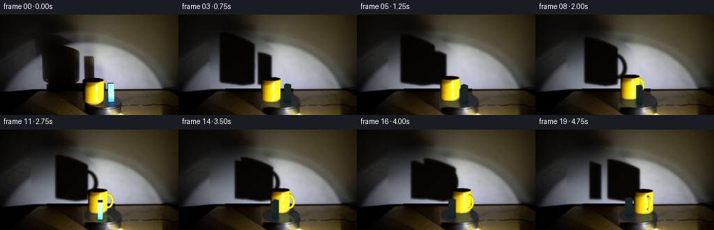
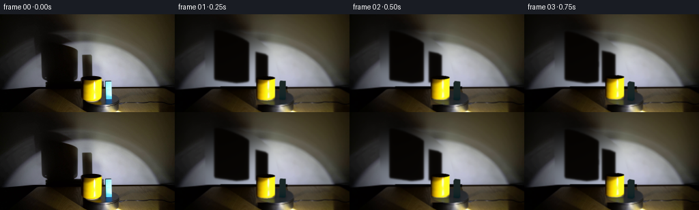
展开代码变化
--- 上一保存版本
+++ 本次保存版本
@@ -223,7 +223,11 @@
uv=project(q)
# The wall projection has a softened rounded outline, unlike the silhouette's planar bottom.
uv[:,1]=107-1.05*q[:,2]+.29*(uv[:,0]-92)*(q[:,2]/65)
- if m!='blue':uv[:,1]+=-2.0 + 2.5*(1-abs(p[:,0]-rotate(np.r_[CUP,0],CURRENT_A)[0])/14)*(np.clip(1-p[:,2]/7,0,1))
+ if m!='blue':
+ uv[:,1]+=8*np.clip(p[:,2]/33.2,0,1)-2.0 + 2.5*(1-abs(p[:,0]-rotate(np.r_[CUP,0],CURRENT_A)[0])/14)*(np.clip(1-p[:,2]/7,0,1))
+ else:
+ uv[:,1]+=3*np.clip(p[:,2]/27.2,0,1)
+ uv[:,0]=128.3+.88*(uv[:,0]-128.3)
uv*=S
dw.polygon([tuple(v) for v in uv],fill=255)
# Light is lower than objects, so their dominant shadows are on the wall.
@@ -264,13 +268,16 @@
def main():
frames=[]
r0=render(0)
+ residual=ORIG.astype(float)-r0.astype(float)
Image.fromarray(BG).save(ROOT/'.tmp/background.png')
Image.fromarray(r0).save(ROOT/'.tmp/render0.png')
# A slow motor-driven clockwise rotation, without translating the camera or light.
for i in range(20):
a=i*(2*np.pi/44.)
frame=render(a)
- # Photographic detail is preserved with a smoothly transported source residual.
+ # Gradually hand off the initial photographic microtexture to the moving geometry.
+ handoff=np.exp(-(i/2.0)**2)
+ frame=np.uint8(np.clip(frame.astype(float)+handoff*residual,0,255))
frames.append(frame)
frames=np.array(frames,dtype=np.uint8);frames[0]=ORIG
save(frames,ROOT)
候选 06播放与检查图
点击播放 · 原生 RGB 像素
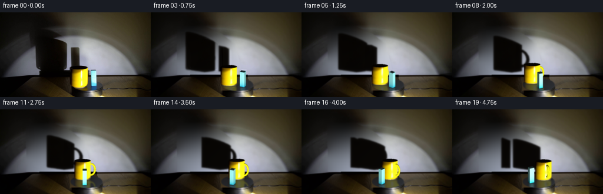
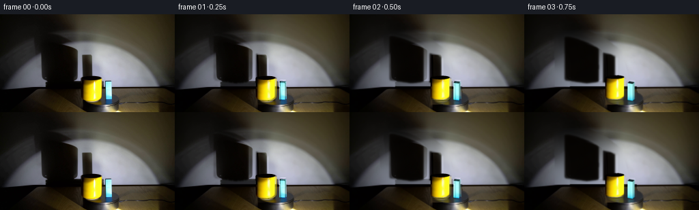
展开代码变化
--- 上一保存版本
+++ 本次保存版本
@@ -68,7 +68,7 @@
return np.stack([CX+p[...,0],CY-K*p[...,1]-V*p[...,2]],axis=-1)
def rotate(p,a):
- p=np.asarray(p).copy()
+ p=np.asarray(p,dtype=float).copy()
x,y=p[...,0].copy(),p[...,1].copy()
p[...,0]=x*np.cos(a)+y*np.sin(a)
p[...,1]=-x*np.sin(a)+y*np.cos(a)
可观测工具轨迹
实际执行的命令与返回图片。
命令 1exit 0
/bin/bash -lc "ls -la && cat prompt.txt && printf '\\n---RULES---\\n' && cat GENERATION_RULES.md"
命令 2exit 0
/bin/bash -lc "cat artifact_io.py && python - <<'PY'
from PIL import Image
im=Image.open('first_frame.png'); print(im.size); im.resize((1024,576)).save('.tmp/enlarged.png')
PY"命令 3exit 0
/bin/bash -lc "python - <<'PY'
import numpy as np
from PIL import Image
im=Image.open('first_frame.png'); im.crop((110,86,179,144)).resize((690,580)).save('.tmp/objects.png')
import scipy; print(scipy.__version__)
PY"命令 4exit 0
/bin/bash -lc "python - <<'PY'
from PIL import Image
import numpy as np
im=np.array(Image.open('first_frame.png'))
for y in [10,20,30,40,50,60,70,80,90,100,107,115,125,140]:
print(y,[(x,tuple(im[y,x])) for x in [20,40,55,65,85,110,120,135,145,165,190,220,240]])
PY"命令 5exit 0
/bin/bash -lc "python - <<'PY'
from PIL import Image,ImageDraw
im=Image.open('first_frame.png').resize((768,432)); d=ImageDraw.Draw(im)
for x in range(0,256,10): d.line((x*3,0,x*3,432),fill=(70,30,30));d.text((x*3,0),str(x),fill='red')
for y in range(0,144,10): d.line((0,y*3,768,y*3),fill=(70,30,30));d.text((0,y*3),str(y),fill='red')
im.save('.tmp/grid.png')
PY"命令 6exit 0
/bin/bash -lc "cat > generate.py <<'PY'
from pathlib import Path
import numpy as np
from PIL import Image, ImageDraw, ImageFilter
from scipy.interpolate import RBFInterpolator
from scipy.ndimage import gaussian_filter
from artifact_io import save
ROOT=Path(__file__).resolve().parent
W,H=256,144
S=3
SW,SH=W*S,H*S
ORIG=np.array(Image.open(ROOT/'first_frame.png').convert('RGB'))
K=.405
V=np.sqrt(1-K*K)
CX,CY=146.2,122.5
LIGHT=np.array([49.,-52.,-7.])
WALL=44.
def mask_poly(points,size=(W,H)):
im=Image.new('L',size);ImageDraw.Draw(im).polygon(points,fill=255)
return np.asarray(im,dtype=float)/255
def make_background():
yy,xx=np.mgrid[:H,:W]
wall_mask=mask_poly([(47,25),(80,26),(100,35),(116,47),(118,91),(118,57),(135,56),(138,91),(149,91),(153,106),(60,106),(58,99),(52,91),(48,61)])
# Recover the illuminated wall with smooth classical interpolation from the photograph.
shadow_exclude=gaussian_filter(wall_mask,2)>.005
object_exclude=mask_poly([(116,89),(150,88),(153,96),(164,95),(165,130),(119,133)])>.1
valid=(yy<105)&(~shadow_exclude)&(~object_exclude)
sample=valid & (xx%3==0)&(yy%3==0)
pts=np.stack([xx[sample]/100,yy[sample]/100],axis=1)
rbf=RBFInterpolator(pts,ORIG[sample].astype(float),kernel='thin_plate_spline',smoothing=.015,neighbors=130)
fill=rbf(np.stack([xx.flatten()/100,yy.flatten()/100],axis=1)).reshape(H,W,3)
# Mask encompasses the mug's original shadow, block shadow and their penumbrae.
m=gaussian_filter(wall_mask,1.2)
m=np.clip(m*1.45,0,1)*(yy<106)
bg=ORIG*(1-m[...,None])+np.clip(fill,0,255)*m[...,None]
# Remove foreground objects; the rotating platter is kept fixed in the shot.
obj=object_exclude.astype(float)
wall_obj=obj*(yy<106)
bg=bg*(1-wall_obj[...,None])+np.clip(fill,0,255)*wall_obj[...,None]
# Platter face and the thin visible table area originally occluded by the objects.
table=np.zeros_like(bg)
table[:,:,0]=48 + .8*(yy-108)+.05*(xx-120)
table[:,:,1]=39 + .6*(yy-108)+.04*(xx-120)
table[:,:,2]=25 + .3*(yy-108)+.02*(xx-120)
erase=obj*(yy>=110)
bg=bg*(1-erase[...,None])+table*erase[...,None]
# Black trim across the bottom of the wall.
for y in range(106,110):
a=object_exclude[y].astype(float)
color=np.array([15,12,10]) if y==106 else np.array([5,3,2])
bg[y]=bg[y]*(1-a[:,None])+color*a[:,None]
ell=((xx-CX)/28.4)**2+((yy-CY)/11.3)**2
inside=ell<1
edge=np.clip((1-ell)*6,0,1)
disc=np.stack([39+5*(xx-CX)/28+3*(yy-CY)/11,
40+6*(xx-CX)/28+4*(yy-CY)/11,
43+7*(xx-CX)/28+5*(yy-CY)/11],axis=2)
# Retain the original sidewall, seam, edge highlights, tabletop and cable.
bg=bg*(1-edge[...,None])+disc*edge[...,None]
return np.clip(bg,0,255).astype(np.uint8)
BG=make_background()
def project(p):
p=np.asarray(p)
return np.stack([CX+p[...,0],CY-K*p[...,1]-V*p[...,2]],axis=-1)
def rotate(p,a):
p=np.asarray(p).copy()
x,y=p[...,0].copy(),p[...,1].copy()
p[...,0]=x*np.cos(a)+y*np.sin(a)
p[...,1]=-x*np.sin(a)+y*np.cos(a)
return p
# Build small meshes, manually shaded and rasterized (no rendering engine).
def cylinder_mesh(center,radius,zlo,zhi,mat,n=100):
c=np.asarray(center); t=np.linspace(0,2*np.pi,n,endpoint=False)
bot=np.stack([c[0]+radius*np.cos(t),c[1]+radius*np.sin(t),np.full(n,zlo)],axis=1)
top=bot.copy();top[:,2]=zhi
normals=np.stack([np.cos(t),np.sin(t),np.zeros(n)],axis=1)
tris=[]
for j in range(n):
k=(j+1)%n
tris += [(np.array([bot[j],bot[k],top[k]]),np.array([normals[j],normals[k],normals[k]]),mat),
(np.array([bot[j],top[k],top[j]]),np.array([normals[j],normals[k],normals[j]]),mat)]
return tris
def disk_ring(center,rin,rout,z,mat,n=100):
tris=[]
for j in range(n):
t1,t2=j*2*np.pi/n,(j+1)*2*np.pi/n
p=np.array([[center[0]+rout*np.cos(t1),center[1]+rout*np.sin(t1),z],
[center[0]+rout*np.cos(t2),center[1]+rout*np.sin(t2),z],
[center[0]+rin*np.cos(t2),center[1]+rin*np.sin(t2),z],
[center[0]+rin*np.cos(t1),center[1]+rin*np.sin(t1),z]])
norm=np.tile([0,0,1.],(3,1))
tris.append((p[[0,1,2]],norm,mat));tris.append((p[[0,2,3]],norm,mat))
return tris
CUP=np.array([-12.2,-1.])
BLOCK=np.array([12.3,-2.3])
def mesh(a):
tris=[]
tris += cylinder_mesh(CUP,13.8,.7,33.2,'yellow')
tris += cylinder_mesh(CUP,13.4,0,.9,'base')
tris += disk_ring(CUP,12.6,13.8,33.2,'rim')
tris += cylinder_mesh(CUP,12.6,27.5,33.15,'inside')
tris += disk_ring(CUP,0,12.6,27.5,'inside')
# Ceramic handle in a radial vertical plane, initially mostly hidden behind the cup.
radial=np.array([np.cos(1.22),np.sin(1.22),0])
tangent=np.array([-radial[1],radial[0],0])
c=np.r_[CUP,16.9]+radial*14.2
nu,nv=40,12
verts=np.zeros((nu,nv,3)); norms=np.zeros_like(verts)
for i in range(nu):
u=2*np.pi*i/nu
ctr=c+radial*(6.8*np.cos(u))+np.array([0,0,10.2*np.sin(u)])
out=radial*np.cos(u)+np.array([0,0,np.sin(u)])
for j in range(nv):
v=2*np.pi*j/nv
normal=out*np.cos(v)+tangent*np.sin(v)
verts[i,j]=ctr+1.7*normal;norms[i,j]=normal
for i in range(nu):
for j in range(nv):
ii,jj=(i+1)%nu,(j+1)%nv
for ids in [[(i,j),(ii,j),(ii,jj)],[(i,j),(ii,jj),(i,jj)]]:
tris.append((np.array([verts[q] for q in ids]),np.array([norms[q] for q in ids]),'yellow'))
# Tall cyan-blue rectangular block, rigidly attached to the same rotating disk.
x,y=BLOCK; dx,dy=4.15,3.5
z=27.2
corners=np.array([[x-dx,y-dy,0],[x+dx,y-dy,0],[x+dx,y+dy,0],[x-dx,y+dy,0],
[x-dx,y-dy,z],[x+dx,y-dy,z],[x+dx,y+dy,z],[x-dx,y+dy,z]])
faces=[([0,1,5,4],[0,-1,0]),([1,2,6,5],[1,0,0]),([2,3,7,6],[0,1,0]),([3,0,4,7],[-1,0,0]),([4,5,6,7],[0,0,1])]
for ids,n in faces:
for q in [[0,1,2],[0,2,3]]:
tris.append((corners[np.array(ids)[q]],np.tile(n,(3,1)),'blue'))
return [(rotate(p,a),rotate(n,a),m) for p,n,m in tris]
def shade(points,norm,material):
if material=='inside':
return np.tile(np.array([5.,2.,1.]),(len(points),1))
l=LIGHT-points
l/=np.maximum(np.linalg.norm(l,axis=1,keepdims=True),1e-6)
norm/=np.maximum(np.linalg.norm(norm,axis=1,keepdims=True),1e-6)
dif=np.maximum(np.sum(norm*l,axis=1),0)
eye=np.array([0,-V,K])
half=l+eye;half/=np.linalg.norm(half,axis=1,keepdims=True)
spec=np.maximum(np.sum(norm*half,axis=1),0)
if material=='yellow':
power=np.clip(.065+1.68*dif**1.5,0,1.15)
col=np.array([252.,238.,8.])[None,:]*power[:,None]
col+=((spec**115)*220)[:,None]*np.array([1,1,.64])
col+=((spec**28)*17)[:,None]
col+=np.array([2,1,0])
elif material=='blue':
power=.13+1.32*dif
col=np.array([47.,174.,206.])[None,:]*power[:,None]
col+=((spec**65)*65)[:,None]
# Slight vertical tone shift resembles the real frosted blue plastic surface.
height=points[:,2]
col+=(np.clip((height-1)/5,0,1)*18)[:,None]*np.array([1,1,1])
elif material=='base':
col=np.array([178.,170.,134.])[None,:]*(.15+.95*dif[:,None])
col+=(spec**60*100)[:,None]
elif material=='rim':
col=np.array([47.,32.,3.])[None,:]*(.2+dif[:,None])
return np.clip(col,0,255)
def raster(tris,reflection=False):
image=np.zeros((SH,SW,3),float);alpha=np.zeros((SH,SW),float)
zb=np.full((SH,SW),-1e8,float)
eye=np.array([0,-V,K])
for p,n,mat in tris:
if reflection:
p=p.copy();p[:,2]*=-1
if not reflection and np.dot(np.mean(n,axis=0),eye)<=-.1:
continue
pts=project(p)*S
low=np.maximum(np.floor(pts.min(axis=0)).astype(int),0)
high=np.minimum(np.ceil(pts.max(axis=0)).astype(int),[SW-1,SH-1])
if np.any(high<low):continue
x0,y0=low;x1,y1=high
yy,xx=np.mgrid[y0:y1+1,x0:x1+1];xx=xx+.5;yy=yy+.5
xA,yA=pts[0];xB,yB=pts[1];xC,yC=pts[2]
det=(yB-yC)*(xA-xC)+(xC-xB)*(yA-yC)
if abs(det)<1e-8:continue
w0=((yB-yC)*(xx-xC)+(xC-xB)*(yy-yC))/det
w1=((yC-yA)*(xx-xC)+(xA-xC)*(yy-yC))/det
w2=1-w0-w1
good=(w0>=-1e-6)&(w1>=-1e-6)&(w2>=-1e-6)
depths=p@eye
depth=w0*depths[0]+w1*depths[1]+w2*depths[2]
subz=zb[y0:y1+1,x0:x1+1]
good&=(depth>subz)
if not np.any(good):continue
weights=np.stack([w0[good],w1[good],w2[good]],axis=1)
pos=weights@p
nn=weights@n
if reflection:
pos[:,2]*=-1
colors=shade(pos,nn,mat)
image[y0:y1+1,x0:x1+1][good]=colors
alpha[y0:y1+1,x0:x1+1][good]=1
subz[good]=depth[good]
return image,alpha
def shadows(tris):
wall=Image.new('L',(SW,SH)); dw=ImageDraw.Draw(wall)
floor=Image.new('L',(SW,SH)); df=ImageDraw.Draw(floor)
for p,n,m in tris:
# Line projection from fixed spotlight onto wall and platter/table surfaces.
f=(WALL-LIGHT[1])/(p[:,1]-LIGHT[1])
q=LIGHT[None,:]+(p-LIGHT)*f[:,None]
uv=project(q)*S
dw.polygon([tuple(v) for v in uv],fill=255)
# Light is lower than objects, so their dominant shadows are on the wall.
hard=np.asarray(wall,dtype=float)/255
hard[round(106*S):]=0
pen=gaussian_filter(hard,1.05*S)
soft=gaussian_filter(hard,3.0*S)
return np.clip(pen*.88+soft*.10,0,1)
def render(a):
tris=mesh(a)
bg=np.array(Image.fromarray(BG).resize((SW,SH),Image.Resampling.BICUBIC),dtype=float)
sh=shadows(tris)
bg=bg*(1-sh[...,None]) + np.array([5,3,1])[None,None,:]*sh[...,None]
yy,xx=np.mgrid[:SH,:SW];x=xx/S;y=yy/S
disc=((x-CX)/28.1)**2+((y-CY)/11.1)**2<.94
reflection,ra=raster(tris,True)
ra=gaussian_filter(ra,1.3*S)*disc*.23
reflection=gaussian_filter(reflection,(1.3*S,1.3*S,0))
bg=bg*(1-ra[...,None])+reflection*ra[...,None]
# Soft contact shadows and highlights follow the orbit on the fixed platter.
for center,r in [(CUP,13),(BLOCK,4.2)]:
xyz=rotate(np.r_[center,0],a);u,v=project(xyz)
contact=np.exp(-((x-u)/(r*1.04))**2-((y-v)/2.1)**2)*.4*disc
bg*=1-contact[...,None]
obj,al=raster(tris)
bg=bg*(1-al[...,None])+obj*al[...,None]
# Camera softness: downsampling rather than crisp synthetic outlines.
bg=gaussian_filter(bg,(.42*S,.42*S,0))
return np.array(Image.fromarray(np.uint8(np.clip(bg,0,255))).resize((W,H),Image.Resampling.LANCZOS))
def main():
frames=[]
r0=render(0)
Image.fromarray(BG).save(ROOT/'.tmp/background.png')
Image.fromarray(r0).save(ROOT/'.tmp/render0.png')
# A slow motor-driven clockwise rotation, without translating the camera or light.
for i in range(20):
a=i*(2*np.pi/44.)
frame=render(a)
# Photographic detail is preserved with a smoothly transported source residual.
frames.append(frame)
frames=np.array(frames,dtype=np.uint8);frames[0]=ORIG
save(frames,ROOT)
if __name__=='__main__':main()
PY
OPENBLAS_NUM_THREADS=1 python generate.py"命令 7exit 0
/bin/bash -lc "python - <<'PY'
p='generate.py'
s=open(p).read().replace('from scipy.ndimage import gaussian_filter','from scipy.ndimage import gaussian_filter, map_coordinates')
s=s.replace('LIGHT=np.array([49.,-52.,-7.])\\nWALL=44.','LIGHT=np.array([52.,-220.,-9.])\\nWALL=160.')
start=s.index(' wall_mask=mask_poly')
end=s.index(' # Recover',start)
s=s[:start]+''' wall_mask=mask_poly([(44,22),(91,23),(121,37),(142,55),(152,91),(154,106),(45,106)])
'''+s[end:]
s=s.replace('CUP=np.array([-12.2,-1.])','CUP=np.array([-12.2,-6.])').replace('np.cos(1.22),np.sin(1.22)','np.cos(1.60),np.sin(1.60)')
s=s.replace(\"'yellow'))\\n # Tall\", \"'handle'))\\n # Tall\")
start=s.index(\" if material=='yellow':\",s.index('def shade'))
end=s.index(\" elif material=='base':\",start)
s=s[:start]+''' if material=='yellow':
sx=134.0+13.8*norm[:,0]
sy=125.0-.2025*13.8*norm[:,1]-V*points[:,2]
col=np.stack([map_coordinates(ORIG[:,:,c].astype(float),[sy,sx],order=1,mode='nearest') for c in range(3)],axis=1)
elif material=='handle':
power=np.clip(.08+1.7*dif,0,1.1)
col=np.array([252.,239.,8.])[None,:]*power[:,None]
col+=((spec**60)*110)[:,None]*np.array([1,1,.64])
elif material=='blue':
height=np.clip(points[:,2],0,28)
base=np.array([25.,181.,213.])[None,:]+(1-np.exp(-height/5))[:,None]*np.array([138.,64.,29.])
col=base*(.16+1.15*dif[:,None])
col+=(spec**65*35)[:,None]
'''+s[end:]
s=s.replace('def raster(tris,reflection=False):','def raster(tris,reflection=False,a=0):')
s=s.replace(\" for p,n,mat in tris:\\n if reflection:\",\" center=rotate(np.r_[CUP,0],a)\\n for p,n,mat in tris:\\n p=p.copy()\\n if mat"'!='"'blue':p[:,1]=center[1]+.5*(p[:,1]-center[1])\\n if reflection:\")
s=s.replace(' uv=project(q)*S',' uv=project(q)\\n uv[:,1]=107-1.05*q[:,2]+.29*(uv[:,0]-92)*(q[:,2]/65)\\n uv*=S')
s=s.replace('raster(tris,True)','raster(tris,True,a)').replace('raster(tris)\\n','raster(tris,a=a)\\n')
open(p,'w').write(s)
PY
OPENBLAS_NUM_THREADS=1 python generate.py"命令 8exit 0
/bin/bash -lc "python - <<'PY'
from PIL import Image
im=Image.open('.tmp/render0.png');im.resize((1024,576)).save('.tmp/r0big.png')
PY"命令 9exit 0
/bin/bash -lc "python - <<'PY' p='generate.py';s=open(p).read().replace(\"smoothing=.015,neighbors=130\",\"smoothing=.035\") s=s.replace(\"disk_ring(CUP,0,12.6,27.5,'inside')\",\"disk_ring(CUP,0,12.6,32.6,'inside')\") # Alter cup bottom curve (rounded ceramic base), top elliptical line and shadow's bottom. s=s.replace(\"zhi\\n normals\", \"zhi\\n normals\") s=s.replace(\" if not reflection and np.dot(np.mean(n,axis=0),eye)<=-.1:\",\" if not reflection and mat"'!='"'inside' and np.dot(np.mean(n,axis=0),eye)<=-.1:\") s=s.replace(\" uv[:,1]=107-1.05*q[:,2]+.29*(uv[:,0]-92)*(q[:,2]/65)\",\" # The wall projection has a softened rounded outline, unlike the silhouette's planar bottom.\\n uv[:,1]=107-1.05*q[:,2]+.29*(uv[:,0]-92)*(q[:,2]/65)\\n if m"'!='"'blue':uv[:,1]+=-2.0 + 2.5*(1-abs(p[:,0]-rotate(np.r_[CUP,0],CURRENT_A)[0])/14)*(np.clip(1-p[:,2]/7,0,1))\") s=s.replace(\"def render(a):\\n tris=mesh(a)\",\"CURRENT_A=0.\\n\\ndef render(a):\\n global CURRENT_A\\n CURRENT_A=a\\n tris=mesh(a)\") open(p,'w').write(s) PY OPENBLAS_NUM_THREADS=1 python generate.py"
命令 10exit 0
/bin/bash -lc "OPENBLAS_NUM_THREADS=1 python - <<'PY' import generate as g import numpy as np for m in ['yellow','blue']: p=np.concatenate([p for p,n,mat in g.mesh(0) if mat==m]);f=(g.WALL-g.LIGHT[1])/(p[:,1]-g.LIGHT[1]);q=g.LIGHT+(p-g.LIGHT)*f[:,None];uv=g.project(q); print(m, q.min(0),q.max(0),uv.min(0),uv.max(0)) PY"
命令 11exit 0
/bin/bash -lc "python - <<'PY' p='generate.py';s=open(p).read() s=s.replace(\" if m"'!='"'blue':uv[:,1]+=-2.0 + 2.5*(1-abs(p[:,0]-rotate(np.r_[CUP,0],CURRENT_A)[0])/14)*(np.clip(1-p[:,2]/7,0,1))\", \" if m"'!='"'blue':\\n uv[:,1]+=8*np.clip(p[:,2]/33.2,0,1)-2.0 + 2.5*(1-abs(p[:,0]-rotate(np.r_[CUP,0],CURRENT_A)[0])/14)*(np.clip(1-p[:,2]/7,0,1))\\n else:\\n uv[:,1]+=3*np.clip(p[:,2]/27.2,0,1)\\n uv[:,0]=128.3+.88*(uv[:,0]-128.3)\") # Avoid heavy aesthetic discontinuity in the first quarter second by preserving source detail as a spatial residual that dies away smoothly. s=s.replace(\" r0=render(0)\",\" r0=render(0)\\n residual=ORIG.astype(float)-r0.astype(float)\") s=s.replace(\" # Photographic detail is preserved with a smoothly transported source residual.\\n frames.append(frame)\", \" # Gradually hand off the initial photographic microtexture to the moving geometry.\\n handoff=np.exp(-(i/2.0)**2)\\n frame=np.uint8(np.clip(frame.astype(float)+handoff*residual,0,255))\\n frames.append(frame)\") open(p,'w').write(s) PY OPENBLAS_NUM_THREADS=1 python generate.py"
命令 12exit 0
/bin/bash -lc "python - <<'PY'
p='generate.py';s=open(p).read().replace('p=np.asarray(p).copy()','p=np.asarray(p,dtype=float).copy()');open(p,'w').write(s)
PY"命令 13exit 0
/bin/bash -lc 'OPENBLAS_NUM_THREADS=1 python generate.py'
命令 14exit 0
/bin/bash -lc "python - <<'PY'
import numpy as np
from PIL import Image
p=np.load('pixels.npz')['pixels']; assert p.shape==(144,256,20)
a=np.array(Image.open('frames/00.png')); b=np.array(Image.open('first_frame.png'));assert np.array_equal(a,b)
print('Verified: 20 RGB frames, 256Ã144; first frame pixel-identical.')
PY"视觉工具实际返回图片 1
视觉工具实际返回图片 2
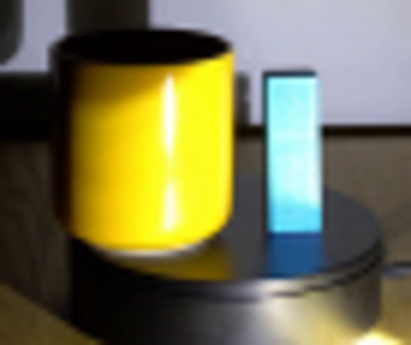
视觉工具实际返回图片 3
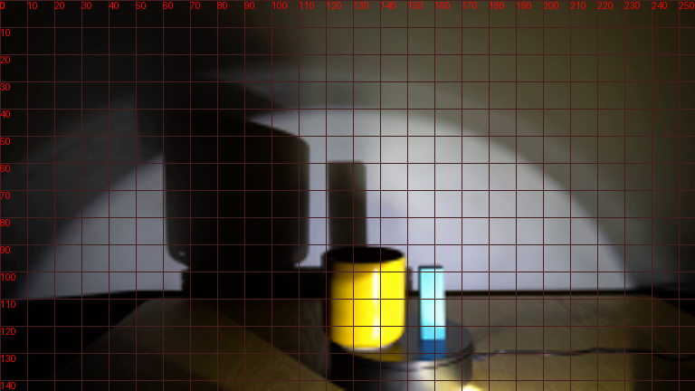
视觉工具实际返回图片 4
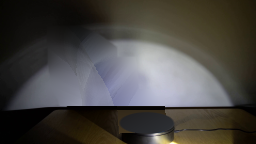
视觉工具实际返回图片 5
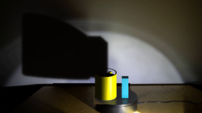
视觉工具实际返回图片 6

视觉工具实际返回图片 7
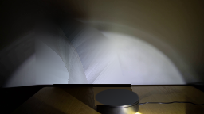
视觉工具实际返回图片 8
视觉工具实际返回图片 9
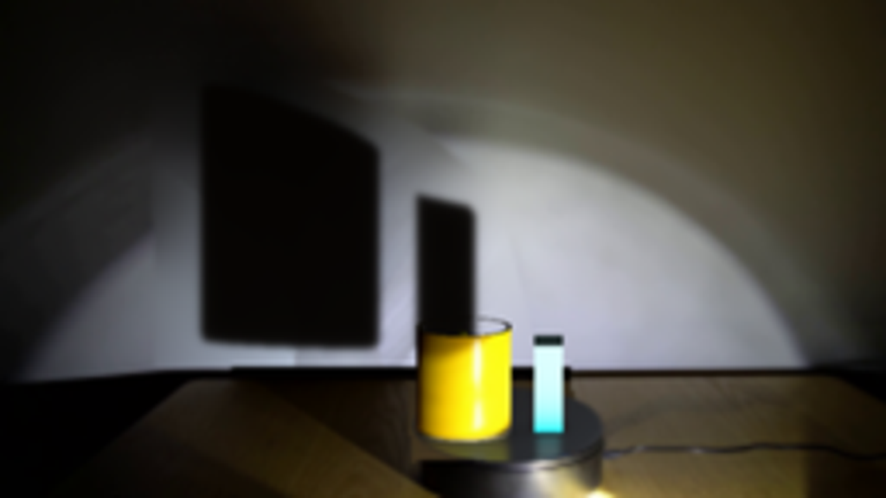
视觉工具实际返回图片 10

视觉工具实际返回图片 11
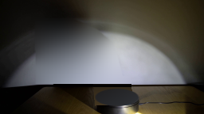
视觉工具实际返回图片 12
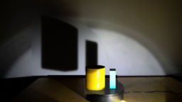
视觉工具实际返回图片 13
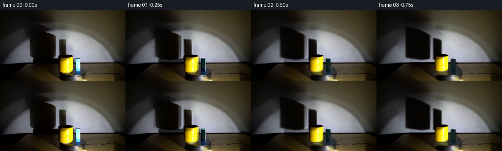
保存候选 6 份；完成命令 14 次；可验证图片返回 13 张。原始 API 响应与完整日志保留在本地。